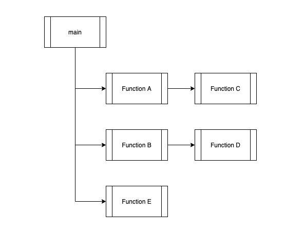

最美的程序：用 Lisp 写的 Lisp 解释器
本文来自于 2017 年 PWL NYC Meetup，作者的简介如下：
William E. Byrd (@webyrd) is a Research Assistant Professor in the School of Computing at the University of Utah. He is co-author of 'The Reasoned Schemer', and is co-designer of the miniKanren relational programming language. He loves StarCraft (BW & SC2). Ask him about the scanning tunneling microscope (STM) he is building.
先假设你已经对 Scheme (Lisp 的一门方言) 的基本语法有一些了解。我们直奔主题，来看这个 "The Most Beautiful Program Ever Written" 究竟是什么程序。
A Lisp interpreter written in Lisp
这个 List interpreter 的核心代码如下：
(define eval-expr
(lambda (expr env)
(pmatch expr
[,x (guard (symbol? x))
(env x)]
[(lambda (,x) ,body)
(lambda (arg)
(eval-expr body (lambda (y)
(if (eq? x y)
arg
(env y)))))]
[(,rator ,rand)
((eval-expr rator env)
(eval-expr rand env))])))
pmatch 中仅用短短 3 行代码，就实现了 List interpreter 核心流程，它是如何做到的？
pmatch
pmatch 是一个 pattern match 工具包，用于匹配输入的文本，如：
[(,rator ,rand)]
可以匹配以下任意一种表达式：
'(add1 1) ; rator: add1, rand: 1
'(sub1 1) ; rator: sub1, rand: 1
'((lambda (x) (+ x x)) 3) ; rator: (lambda (x) (+ x x)), rand: 3
'(zero? 1) ; rator: zero?, rand: 1
匹配到模式之后，可以继续指定应该采取的行动，如：
(pmatch expr
[(,rator ,rand)
(rator rand)])
假如 expr 为 '(add1 1)，那么就会执行：
(add1 1)
> 2
(ope)rator & (ope)rand
把 rator/rand 的 pmatch 语句抽出来，得到：
(define eval-expr
(lambda (expr env)
(pmatch expr
[(,rator ,rand),
((eval-expr rator)
(eval-expr rand))])))
通常，计算机程序本身就是树状结构：

如上图所示：
- main 函数调用 A 函数，A 函数中调用 C 函数
- A 返回后，main 函数调用 B 函数，B 函数中调用 D 函数
- B 返回后，main 函数调用 E 函数
- E 返回后，main 函数退出
那么 interpreter 的一个实现思路就是不断得递归调用 interpreter 本身，因此这里对 rator 和 rand 就是递归调用 eval-expr 本身，然后再将 rand 作为参数传递给 rator。这样这个 interpreter 就具备了解释嵌套程序的能力，如：
(add1 (add1 1))
; rator=add1,rand=(eval-expr (add1 1))
; rator=add1,rand=(rator=add1, rand=1)
; rator=add1,rand=2
> 2
env
eval-expr 有两个参数，一个是需要解释的语句，另一个就是包含变量信息的环境，后者是传递参数、闭包的手段。为简单起见，我们设它是个仅有一个入参的 lambda 表达式，如：
(define environment
(lambda (x) (error "oops")))
当某 procedure 执行的过程中需要引用变量时，如：
(define hello 1)
(add1 hello)
> 2
那么我们的 interpreter 在遇到变量 (symbol) 时，势必需要有查询变量对应值的能力，即 variable-lookup，这便是下面这行代码的作用，
(pmatch expr
[,x (guard (symbol? x))
(env x)])
lambda
最后就是如何处理 lambda 表达式：
(pmatch expr
[(lambda (,x) ,body)
(lambda (arg)
(eval-expr body (lambda (y)
(if (eq? x y)
arg
(env y)))))])
这里我们只考虑带有一个参数的 lambda 表达式，x 就是这个参数，body 就是具体的执行逻辑。由于 body 在执行的过程中需要访问 x 参数，因此我们需要将 x 的值放到 env 中，这样 interpreter 就能够通过 env 逻辑找到 x 对应的值，因此在执行 (eval-expr body) 时，需要传递这个 env 表达式：
(lambda (y)
(if (eq? x y)
arg
(env y)))
即：如果要查询的参数与 x 相同，就将 arg 返回，注意这里 arg 与 x 实际上都是变量的标记，背后指代的是相同的东西。
Examples
有了上面 3 条基础逻辑，再简单扩充一下，就能得到一个简易的 Lisp interpreter：
; interp.scm
(define eval-expr
(lambda (expr env)
(pmatch expr
[,n (guard (number? n))
n]
[,x (guard (symbol? x))
(env x)]
[(zero? ,e)
(zero? (eval-expr e env))]
[(sub1 ,e)
(sub1 (eval-expr e env))]
[(* ,e1 ,e2)
(* (eval-expr e1 env)
(eval-expr e2 env))]
[(if ,t ,c ,a)
(if (eval-expr t env)
(eval-expr c env)
(eval-expr a env))]
[(lambda (,x) ,body)
(lambda (arg)
(eval-expr body (lambda (y)
(if (eq? x y)
arg
(env y)))))]
[(,rator ,rand)
((eval-expr rator env)
(eval-expr rand env))])))
启动 scheme，加载 pmatch 和 interp：
> (load "pmatch.scm")
> (load "interp.scm")
> (define environment
(lambda (x) (error 'lookup "oops")))
我们就能验证这个小小的 interpreter：
> (eval-expr '(sub1 1) environment)
0
> (eval-expr '(sub1
(sub1 1)) environment)
-1
> (eval-expr '(((lambda (!)
(lambda (n)
((! !) n)))
(lambda (!)
(lambda (n)
(if (zero? n)
1
(* n ((! !) (sub1 n)))))))
5) environment)
120
Conclusion
尽管这个 Lisp interpreter 功能并不完全，但其中包含编程思想确十分丰富。基于此，我们可以了解程序语言的编译/解释过程，甚至尝试不同的程序语言特性。它也是 SICP 这门课的精髓所在。
References
- The Most Beautiful Program Ever Written [PWL NYC],meetup page, video, interp.scm, unofficial gist
- webyrd/quines - pmatch.scm